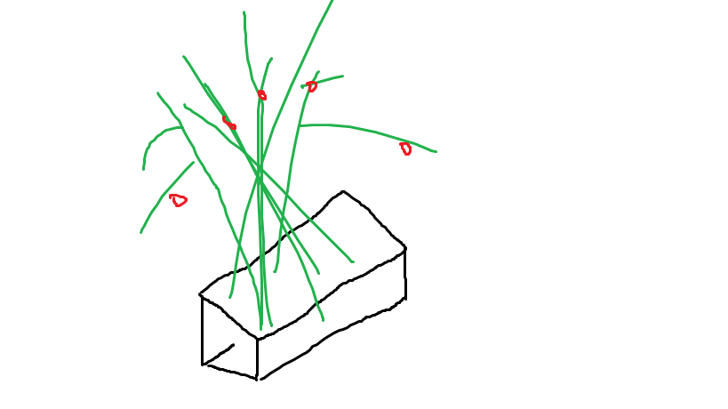

Tips & Tricks
Welcome to the Tips & Tricks tab!! Here we will show you all the tips and tricks to get that garden growing and looking good.
Tip Number 1
If you like to grow tomatos or you want to begin growing them, the easiset way to grow them are to put them in a contanier or pot.
Tip Number 2
One trick we often use is turning a plastic milk jug into a watering jug. We find this very useful and it works just like an actual watering container. This technique is very simple and is something you can do in your own home.

Tip Number 3
Bottle gardening can be very handy for when you've had a long day and just want to rest. This bottle gardening technique does self-watering by letting the plant hang by a string in the bottle and getting water by itself. This way, you can keep your plants healthy and keep yourself healthy.

Tip Number 4
Our final tip is to use coffee grounds. This works just like a fertilizer because it adds nutrients and makes texture and drainage better for the soil.